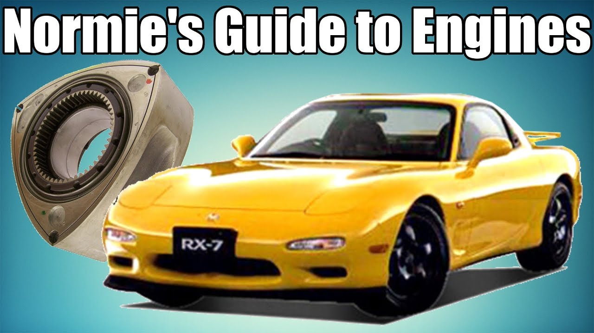

Car engines - The biggest nightmare for environmental activists and people over 50
There are many different types of car engines out there and you may think they all are the same, which is totally...
UNFORGIVABLE...but education should be a right available to anyone...soo..WELCOME TO YOUR (TOTALLY) PERSONALISED

The mechanical part in the image is called a rotor(part of a rotary engine) and the vehicle is a Mazda RX-7(an amazing car!)
Of course, before jumping straight into a study topic, you need to know a little history about what you are studying...
-Sound sneek peek-
Below you will find audio file to further spark your interest. This is how my favorite car's (the Lexus LFA) engine sounds like.
Now, after listening to it, you maybe understand why it's my favorite. It's powered by a naturally aspirated V8 and the exhaust was specially tuned by Yamaha, a company that focuses on audio technologies for the music industry (impressive, right?).
Here are the current ways engines can be powered by:
Gasoline
Diesel
Hybrid (Electric + Gasoline)
Electric
Below lies a table meant to present the most common engine types you'll see. Every bonus cylinder makes a difference!
Engine name
Number of cylinders
Layout type
Inline-four
4
In a line
Inline-six
6
In a line
V6
6
In a V
V8
8
In a V
Flat-four (boxer)
4
Horizontally opposed
Flat-six (boxer)
6
Horizontally opposed
Rotary
2 (Rotors)
In a line
The video below contains explainations regarding engine layouts. It's from 11 years ago but engines have been so good, engineers didn't have to change anything to their layouts